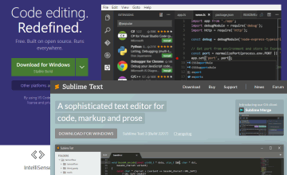

Slideshows
Recent Student Projects
Setting Up

Working with Web Browsers
Installing and customising the two web browsers popular with web designers and web developers.
View Tutorial
Web Hosting on GitHub
Creating a free GitHub account, choosing a username and setting up a repository for serving your web pages.
View Tutorial

Working with Text Editors
Installing and customising a text editor for creating web pages (HTML files) and stylesheets (CSS files).
View Tutorial